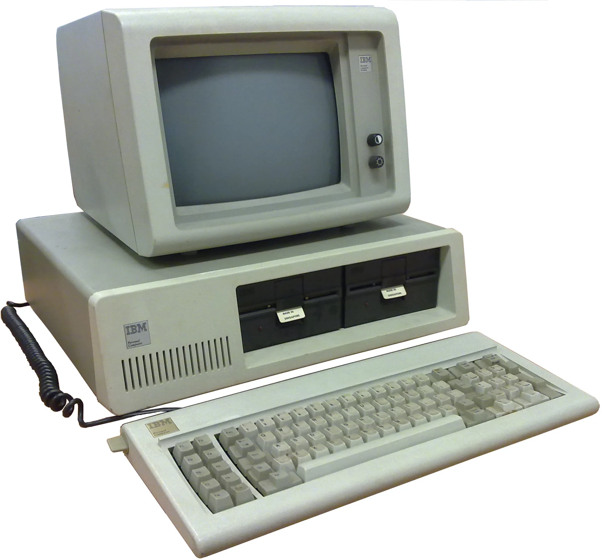
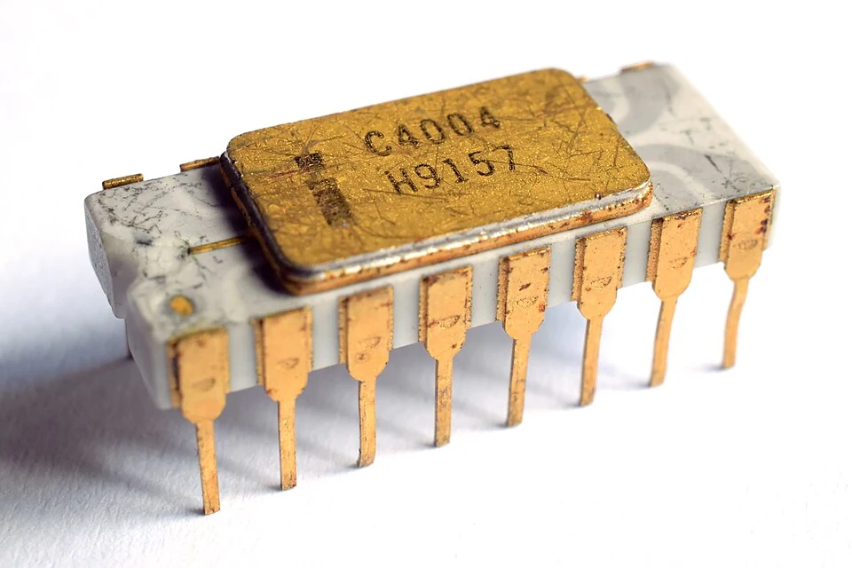
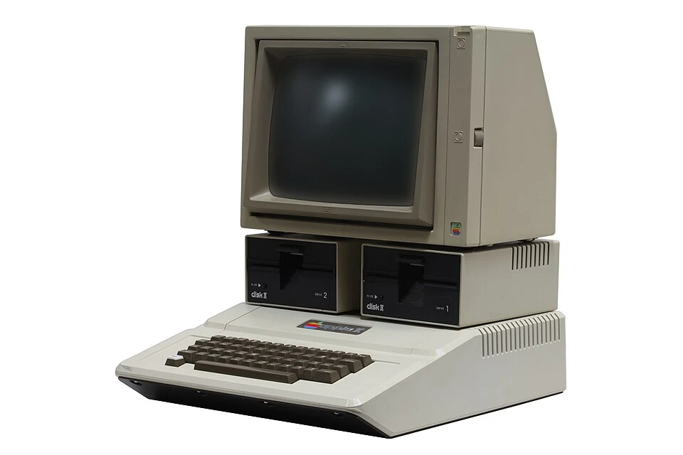
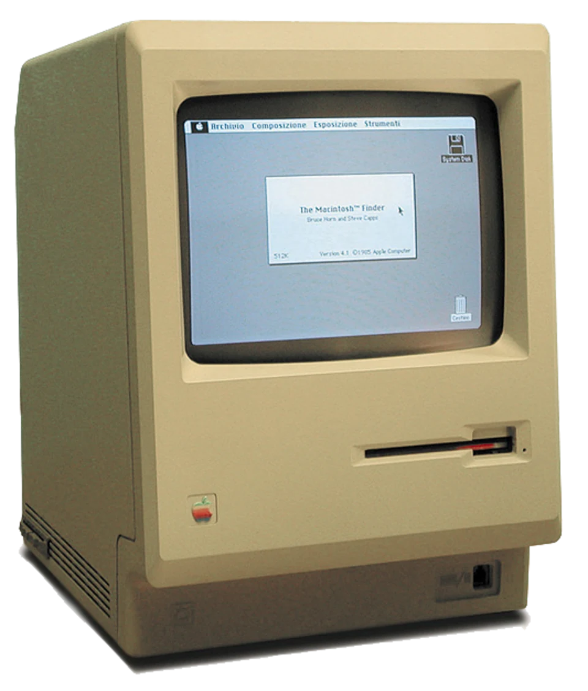
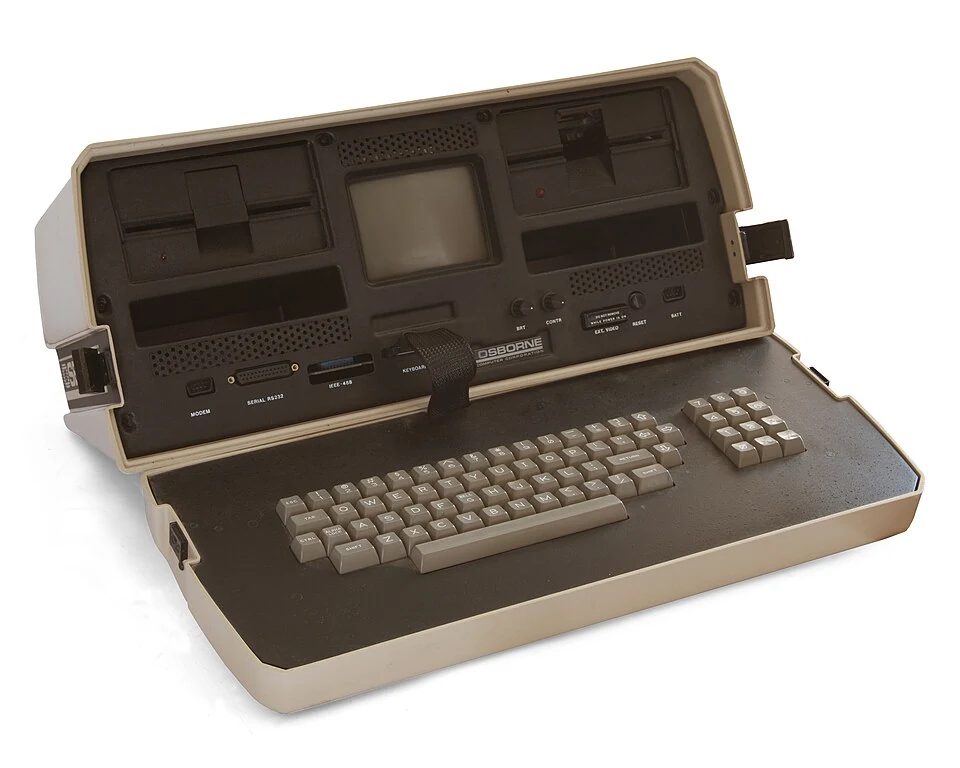

De una sala entera a tu escritorio.
El microprocesador concentró funciones de la CPU en un chip. La reducción de costos y el aumento de la integración hicieron posible que la computadora llegara a hogares, escuelas y pequeños negocios.
Explorar esta generación
La CPU encuentra su lugar en un chip
El Intel 4004, comercializado en 1971, fue un hito temprano del microprocesador comercial. Diseñado inicialmente para un sistema de calculadora, mostró que una unidad de procesamiento programable podía integrarse en un solo chip. CPU significa unidad central de procesamiento: ejecuta instrucciones y coordina operaciones.
Un microprocesador no es una computadora completa por sí solo. Necesita memoria, alimentación y conexiones con dispositivos de entrada y salida. La combinación de estas piezas permite construir sistemas de propósitos muy distintos, desde una computadora de escritorio hasta un controlador integrado.

La revolución de la computadora personal
Durante los años setenta y ochenta, kits para aficionados y computadoras listas para usar ampliaron el público de la informática. El Altair 8800, el Apple II y el IBM PC son referencias de este proceso, con propuestas y momentos distintos. El software se convirtió en una parte decisiva del valor de cada equipo.
Las hojas de cálculo, los procesadores de texto y los programas educativos dieron razones concretas para tener una computadora. Ya no era necesario reservar tiempo en un centro de cálculo para muchas tareas: una persona podía trabajar directamente con su propio equipo.

Ver, señalar y crear
Las interfaces gráficas hicieron visibles acciones antes expresadas principalmente mediante comandos. Ventanas, iconos y un dispositivo apuntador ofrecieron otra manera de organizar documentos y herramientas. No aparecieron de golpe ni pertenecieron a un solo fabricante: surgieron de años de investigación y desarrollo.
La mejora de pantallas, sonido y almacenamiento abrió el camino a aplicaciones multimedia. Con el tiempo, las redes y la expansión de Internet transformaron además la computadora personal en un medio para comunicarse, publicar y acceder a información compartida.

Una tecnología que sigue evolucionando
La integración a gran escala permitió fabricar chips con cantidades crecientes de transistores. Ese avance impulsó equipos más potentes, portátiles y especializados. El microprocesador también llegó a automóviles, electrodomésticos y sistemas de control, muchas veces sin una pantalla o teclado visibles.
La cuarta generación no termina con una frontera universal. Los dispositivos actuales siguen utilizando microprocesadores, incluso cuando ejecutan inteligencia artificial. Por eso es más útil entender las generaciones como cambios tecnológicos que se superponen, y no como cajas cerradas.

¿El microprocesador es, por sí solo, una computadora completa?
Elige una respuesta y comprueba lo que aprendiste.